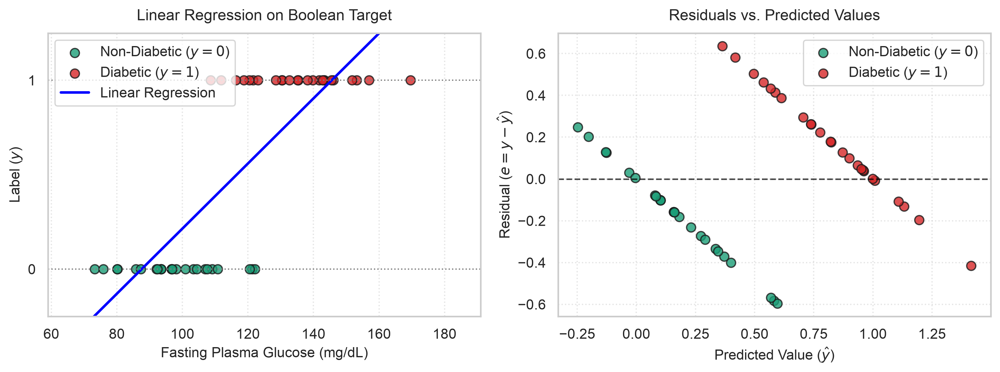
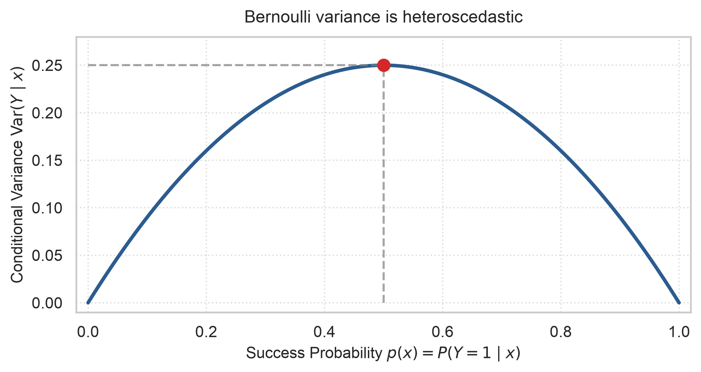
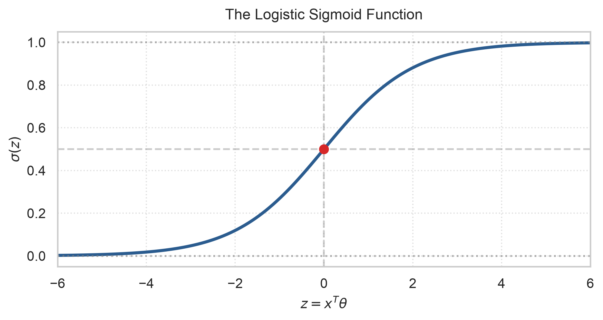
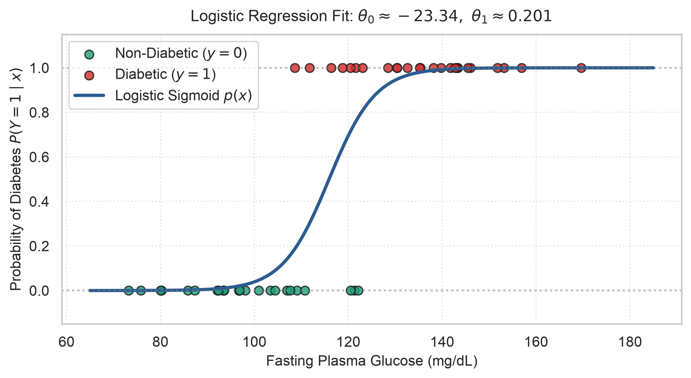
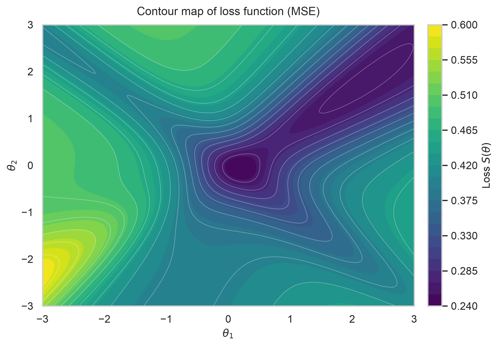
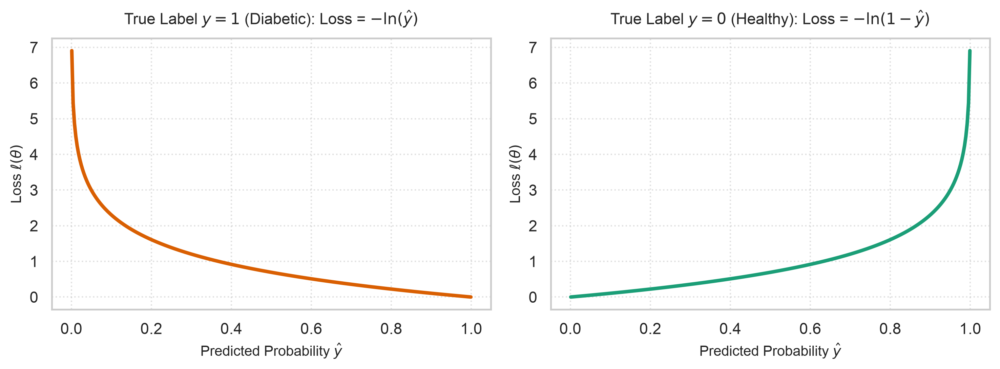
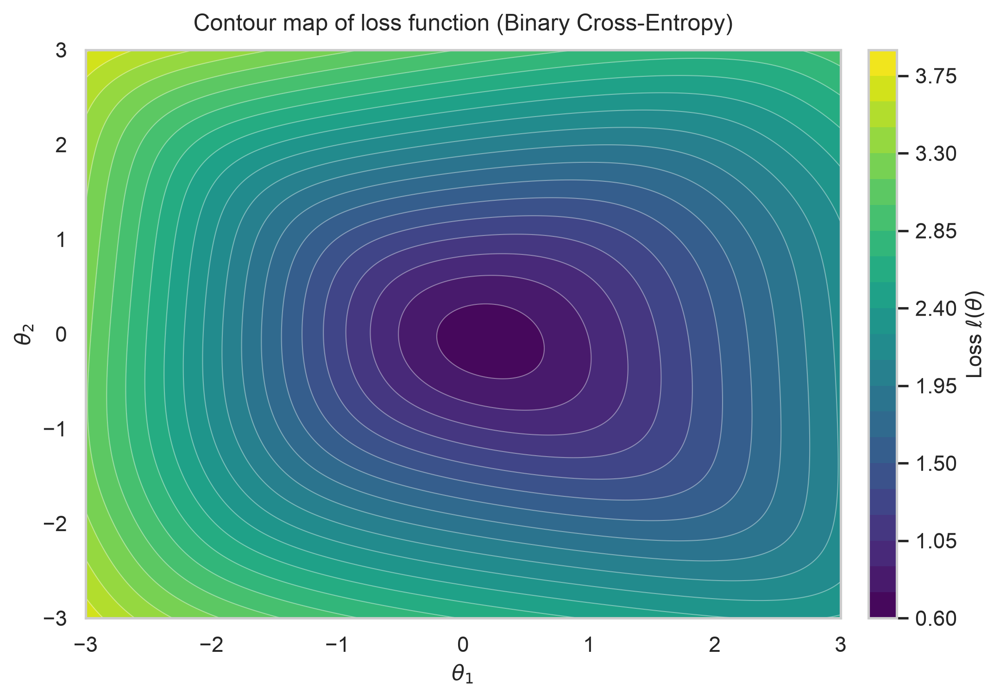

06 Logistic Regression: Classification
Mathematics for Machine Learning (Mathe3)
1. Classification
Consider a categorical target variable that is boolean, where \(y \in \{0, 1\}\). We might be tempted to apply linear regression to this problem, but it is not appropriate for several reasons.
Plot Linear Regression and Residuals on Boolean Data
np.random.seed(42)
n_patients = 50
glucose_healthy = np.random.normal(100, 14, 25)
glucose_diabetic = np.random.normal(140, 16, 25)
glucose = np.concatenate([glucose_healthy, glucose_diabetic])
y = np.concatenate([np.zeros(25), np.ones(25)])
# Fit Linear Regression
ols = LinearRegression().fit(glucose.reshape(-1, 1), y)
x_grid = np.linspace(65, 185, 300).reshape(-1, 1)
y_ols = ols.predict(x_grid)
# In-sample predictions and residuals
y_hat = ols.predict(glucose.reshape(-1, 1))
residuals = y - y_hat
fig, (ax1, ax2) = plt.subplots(1, 2, figsize=(11, 4.2))
# Left panel: Data and OLS fit
ax1.scatter(glucose[y==0], y[y==0], color='#1b9e77', s=50, edgecolors='k', alpha=0.8, label='Non-Diabetic ($y = 0$)')
ax1.scatter(glucose[y==1], y[y==1], color='#d62728', s=50, edgecolors='k', alpha=0.8, label='Diabetic ($y = 1$)')
ax1.plot(x_grid, y_ols, color='blue', lw=2, label='Linear Regression')
ax1.axhline(0.0, color='gray', linestyle=':', lw=1)
ax1.axhline(1.0, color='gray', linestyle=':', lw=1)
ax1.set_title('Linear Regression on Boolean Target', fontsize=12, pad=10)
ax1.set_xlabel('Fasting Plasma Glucose (mg/dL)', fontsize=11)
ax1.set_ylabel('Label ($y$)', fontsize=11)
ax1.set_ylim(-0.25, 1.25)
ax1.set_yticks([0, 1])
ax1.set_yticklabels(['0', '1'])
ax1.legend(loc='upper left', frameon=True)
ax1.grid(True, linestyle=':', alpha=0.5)
# Right panel: Residuals vs Predicted Values
ax2.scatter(y_hat[y==0], residuals[y==0], color='#1b9e77', s=50, edgecolors='k', alpha=0.8, label='Non-Diabetic ($y = 0$)')
ax2.scatter(y_hat[y==1], residuals[y==1], color='#d62728', s=50, edgecolors='k', alpha=0.8, label='Diabetic ($y = 1$)')
ax2.axhline(0.0, color='black', linestyle='--', lw=1.2, alpha=0.7)
ax2.set_title('Residuals vs. Predicted Values', fontsize=12, pad=10)
ax2.set_xlabel(r'Predicted Value ($\hat{y}$)', fontsize=11)
ax2.set_ylabel(r'Residual ($e = y - \hat{y}$)', fontsize=11)
ax2.legend(loc='upper right', frameon=True)
ax2.grid(True, linestyle=':', alpha=0.5)
plt.tight_layout()
plt.show()
Failures of Linear Regression:
- Unbounded outputs (\(y, \hat{y}\)): Continuous predictions \(\hat{y}\) fall below \(0\) or exceed \(1\).
- Non-Gaussian, structured residuals: residuals \(e_i = y_i - \hat{y}_i\) violate Gaussian noise assumption (\(e_i \sim \mathcal{N}(0, \sigma^2)\)) and constant variance (homoscedasticity).
2. Modeling Expectations and Probabilities
When the target is a boolean label \(y \in \{0, 1\}\), each observation conditioned on \(x\) follows a Bernoulli distribution with parameter \(p\).
\[ \begin{aligned} Y & \sim \text{Bernoulli}(p) \\ P(Y=y|p) & = \begin{cases} p & y = 1 (\mathtt{TRUE}) \\ 1-p & y = 0 (\mathtt{FALSE}) \end{cases} \end{aligned} \]
We assume that success probability \(p\) is a function of observable features, i.e. \(p = p(x)\).
For a given value of \(x\), the conditional expectation is precisely the probability of the positive class:
\[\begin{aligned} \mathbb{E}[Y \mid X=x] &= \sum_{y} y \cdot P(Y = y \mid X=x) \\ &= 1 \cdot P(Y = 1 \mid X=x) + 0 \cdot P(Y = 0 \mid X=x) \\ &= P(Y = 1 \mid X=x) \\ &= p(x) = ? \end{aligned}\]
c.f. linear regression: \(\mathbb{E}[Y \mid X=x] = x^T \theta\)
Similarly, the conditional variance is:
\[\text{Var}[Y \mid X=x] = p(x)(1 - p(x))\]
Bernoulli Variance Curve
p_vals = np.linspace(0, 1, 300)
var_vals = p_vals * (1 - p_vals)
fig, ax = plt.subplots(figsize=(7, 3.8))
ax.plot(p_vals, var_vals, color='#2b5c8f', lw=2.5)
ax.scatter([0.5], [0.25], color='#d62728', s=70, zorder=5)
ax.vlines(0.5, 0, 0.25, linestyle='--', color='gray', alpha=0.7)
ax.hlines(0.25, 0, 0.5, linestyle='--', color='gray', alpha=0.7)
ax.set_title("Bernoulli variance is heteroscedastic", fontsize=12, pad=10)
ax.set_xlabel(r'Success Probability $p(x) = P(Y = 1 \mid x)$', fontsize=11)
ax.set_ylabel(r'Conditional Variance $\mathrm{Var}(Y \mid x)$', fontsize=11)
ax.set_xlim(-0.02, 1.02)
ax.set_ylim(-0.01, 0.28)
ax.grid(True, linestyle=':', alpha=0.6)
plt.tight_layout()
plt.show()
Mapping Probabilities to an Unbounded Scale
Which functions should we allow for \(p(x) \in (0,1)\)?
To connect an unbounded linear combination \(z = x^T \theta \in (-\infty, +\infty)\) to a valid probability \(p \in (0, 1)\), we transition across three distinct scales:
| Scale | Definition | Domain / Range | |
|---|---|---|---|
| Probability | \(p(x) = P(Y = 1 \mid x)\) | \([0, 1]\) | |
| Odds | \(\text{odds}(x) = \frac{p(x)}{1 - p(x)}\) | \([0, \infty)\) | |
| Log-Odds (Logit) | \(\text{logit}(p) = \ln\left(\frac{p}{1 - p}\right)\) | \((-\infty, +\infty)\) |
The Sigmoid Link Function
Now the log-odds can be modeled as a linear regression of the features:
\[\ln\left(\frac{p}{1 - p}\right) = z = x^T \theta\]
Then \(p(x)\) can be written as the logistic (sigmoid) function:
\[p(x) = \sigma(z) = \frac{1}{1 + e^{-z}}\]
Plot Logistic Sigmoid Function
z_vals = np.linspace(-6, 6, 300)
sigma_vals = 1 / (1 + np.exp(-z_vals))
fig, ax = plt.subplots(figsize=(7, 3.8))
ax.plot(z_vals, sigma_vals, color='#2b5c8f', lw=2.5)
ax.axhline(0, color='gray', linestyle=':', alpha=0.6)
ax.axhline(1, color='gray', linestyle=':', alpha=0.6)
ax.axhline(0.5, color='gray', linestyle='--', alpha=0.4)
ax.axvline(0, color='gray', linestyle='--', alpha=0.4)
ax.scatter([0], [0.5], color='#d62728', s=50, zorder=5)
ax.set_title("The Logistic Sigmoid Function", fontsize=12, pad=10)
ax.set_xlabel(r"$z = x^T \theta$", fontsize=11)
ax.set_ylabel(r"$\sigma(z)$", fontsize=11)
ax.set_ylim(-0.05, 1.05)
ax.set_xlim(-6, 6)
ax.grid(True, linestyle=':', alpha=0.6)
plt.tight_layout()
plt.show()
Symmetry: \(\sigma(-z) = 1 - \sigma(z)\)
Boundary Limits: \(\lim_{z \to +\infty} \sigma(z) = 1\) and \(\lim_{z \to -\infty} \sigma(z) = 0\)
Center Point: \(\sigma(0) = \frac{1}{1 + 1} = 0.5\)
Derivative:
\[\frac{d\sigma}{dz} = \sigma(z)\left(1 - \sigma(z)\right)\]
3. Scikit-learn Implementation
With the sigmoid link function established, we fit a logistic regression model directly to our fasting glucose cohort using scikit-learn:
Fit Logistic Regression with scikit-learn
from sklearn.linear_model import LogisticRegression
# Fit Logistic Regression
clf = LogisticRegression()
clf.fit(glucose.reshape(-1, 1), y)
# Extract fitted parameters
theta_0 = clf.intercept_[0]
theta_1 = clf.coef_[0, 0]
# Generate prediction curve
x_grid = np.linspace(65, 185, 300).reshape(-1, 1)
p_fit = clf.predict_proba(x_grid)[:, 1]plot_logistic_regression
fig, ax = plt.subplots(figsize=(7.5, 4.2))
ax.scatter(glucose[y == 0], y[y == 0], color="#1b9e77", s=45, edgecolors="k", alpha=0.8, label="Non-Diabetic ($y=0$)")
ax.scatter(glucose[y == 1], y[y == 1], color="#d62728", s=45, edgecolors="k", alpha=0.8, label="Diabetic ($y=1$)")
ax.plot(x_grid, p_fit, color="#2b5c8f", lw=2.5, label="Logistic Sigmoid $p(x)$")
ax.set_title(f"Logistic Regression Fit: $\\theta_0 \\approx {theta_0:.2f},\\ \\theta_1 \\approx {theta_1:.3f}$", fontsize=12, pad=10)
ax.set_xlabel("Fasting Plasma Glucose (mg/dL)", fontsize=11)
ax.set_ylabel("Probability of Diabetes $P(Y = 1 \\mid x)$", fontsize=11)
ax.set_ylim(-0.15, 1.15)
ax.axhline(0, color="gray", linestyle=":", alpha=0.5)
ax.axhline(1, color="gray", linestyle=":", alpha=0.5)
ax.legend(loc="upper left", frameon=True)
ax.grid(True, linestyle=":", alpha=0.5)
plt.tight_layout()
plt.show()
4. Interpreting Parameters and Odds Ratios
In linear regression; coefficient \(\theta_j\) represents the additive change in \(y\) when predictor \(x_j\) changes by one unit, holding all other predictors constant.
In logistic regression, \(\theta_j\) represents the change in the odds ratio when predictor \(x_j\) changes by one unit, holding all other predictors constant (\(z_2 = z_1 + \theta_j \Delta x_j = z_1 + \theta_j\)):
\[\text{Odds Ratio} = \frac{\text{Odds}(x_j + 1)}{\text{Odds}(x_j)} = e^{z_2} / e^{z_1} = e^{z_2 - z_1} = e^{\theta_j}\]
\(\theta_j = 0 \implies \text{Odds Ratio} = 1\): Feature \(x_j\) has no association with the odds of disease.
\(\theta_j > 0 \implies \text{Odds Ratio} > 1\): Feature \(x_j\) increases the odds.
\(\theta_j < 0 \implies \text{Odds Ratio} < 1\): Feature \(x_j\) decreases the odds.
Fasting Glucose (\(x_1\) in \(\text{mg/dL}\)):
From our fitted model: \(\theta_1 \approx 0.201 \longrightarrow \text{OR} = e^{0.201} \approx 1.223\).
Every \(+1\,\text{mg/dL}\) increase in glucose multiplies the odds of diabetes by \(1.223\) (a \(+22.3\%\) increase in odds).Body Mass Index (\(x_2\) in \(\text{kg/m}^2\)):
\(\theta_{\text{bmi}} = 0.16 \longrightarrow \text{OR} = e^{0.16} \approx 1.174\).
Every \(+1\,\text{kg/m}^2\) increase in BMI multiplies the odds of diabetes by \(1.174\) (a \(+17.4\%\) increase).
5. A New Loss Function
5.1 MSE Problem for Classification
Plugging in the sigmoid \(\hat{y}_i = \sigma(x_i^T \theta)\) directly into mean squared error yields:
\[S(\theta) = \frac{1}{n}\sum_{i=1}^n \left( y_i - \hat{y}_i \right)^2 = \frac{1}{n}\sum_{i=1}^n \left( y_i - \sigma(x_i^T \theta) \right)^2\]
For a model with two features (\(x_{i1}, x_{i2}\)) and parameters \(\theta = (\theta_1, \theta_2)^T\), the linear predictor is \(x_i^T \theta = \theta_1 x_{i1} + \theta_2 x_{i2}\), giving the concrete loss:
\[S(\theta_1, \theta_2) = \frac{1}{n}\sum_{i=1}^n \left( y_i - \frac{1}{1 + e^{-(\theta_1 x_{i1} + \theta_2 x_{i2})}} \right)^2\]
Non-Convexity: The composition of the quadratic loss with the non-linear sigmoid generates an irregular landscape with local minima and saddle points.
Gradient Saturation: When the model makes a confident wrong prediction (e.g. \(y=1\) but \(z \ll 0\)), the derivative \(\sigma'(z) \to 0\), causing updates to vanish and learning to stall.
Plot Contour Map of Loss Function (MSE)
# Concrete observations: 6 patients with two standardized clinical features (x_i1, x_i2)
X_sample = np.array([
[ 0.5, -0.2],
[-2.6, -2.7],
[-1.1, 2.4],
[-2.7, 2.4],
[-2.3, -2.6],
[-1.3, 0.7]
])
y_sample = np.array([0, 1, 1, 0, 0, 0])
t1 = np.linspace(-3, 3, 2000)
t2 = np.linspace(-3, 3, 2000)
T1, T2 = np.meshgrid(t1, t2)
def sigmoid(z):
return 1 / (1 + np.exp(-z))
# S(theta) = 1/n sum (y_i - sigma(x_i^T theta))^2 where x_i^T theta = theta1 * x_i1 + theta2 * x_i2
Z = np.zeros_like(T1)
for (x1, x2), yi in zip(X_sample, y_sample):
z = T1 * x1 + T2 * x2
p = sigmoid(z)
Z += (yi - p)**2
Z /= len(y_sample)
fig, ax = plt.subplots(figsize=(7.5, 5.2))
contour = ax.contourf(T1, T2, Z, levels=25, cmap='viridis')
ax.contour(T1, T2, Z, levels=20, colors='white', linewidths=0.5, alpha=0.4)
cbar = plt.colorbar(contour, ax=ax, pad=0.03)
cbar.set_label(r"Loss $S(\theta)$", fontsize=11)
ax.set_title("Contour map of loss function (MSE)", fontsize=12, pad=10)
ax.set_xlabel(r"$\theta_1$", fontsize=11)
ax.set_ylabel(r"$\theta_2$", fontsize=11)
ax.grid(True, linestyle=':', alpha=0.5)
plt.tight_layout()
plt.show()
5.2 Deriving Binary Cross-Entropy
Because \(y_i \in \{0, 1\}\), each observation follows an independent Bernoulli trial with success parameter \(\hat{y}_i = \sigma(x_i^T \theta)\):
\[P(y_i \mid x_i) = \hat{y}_i^{y_i} (1 - \hat{y}_i)^{1 - y_i}\]
For \(n\) independent observations, the joint Likelihood is:
\[L(\theta) = \prod_{i=1}^n \hat{y}_i^{y_i} (1 - \hat{y}_i)^{1 - y_i}\]
Taking the negative logarithm (and normalizing by \(n\)) produces the loss function \(\ell(\theta)\):
\[\ell(\theta) = -\frac{1}{n}\sum_{i=1}^n \left[ y_i \ln \hat{y}_i + (1 - y_i)\ln(1 - \hat{y}_i) \right]\]
Plot Binary Cross-Entropy Loss Curves
p_vals = np.linspace(0.001, 0.999, 300)
loss_y1 = -np.log(p_vals)
loss_y0 = -np.log(1 - p_vals)
fig, axes = plt.subplots(1, 2, figsize=(10, 3.8))
axes[0].plot(p_vals, loss_y1, color='#d95f02', lw=2.5)
axes[0].set_title(r'True Label $y = 1$ (Diabetic): Loss = $-\ln(\hat{y})$', fontsize=11, pad=10)
axes[0].set_xlabel('Predicted Probability $\hat{y}$', fontsize=10)
axes[0].set_ylabel(r'Loss $\ell(\theta)$', fontsize=10)
axes[0].grid(True, linestyle=':', alpha=0.6)
axes[1].plot(p_vals, loss_y0, color='#1b9e77', lw=2.5)
axes[1].set_title(r'True Label $y = 0$ (Healthy): Loss = $-\ln(1 - \hat{y})$', fontsize=11, pad=10)
axes[1].set_xlabel('Predicted Probability $\hat{y}$', fontsize=10)
axes[1].set_ylabel(r'Loss $\ell(\theta)$', fontsize=10)
axes[1].grid(True, linestyle=':', alpha=0.6)
plt.tight_layout()
plt.show()
Plot Contour Map of Loss Function (BCE)
Z_bce = np.zeros_like(T1)
eps = 1e-12
for (x1, x2), yi in zip(X_sample, y_sample):
z = T1 * x1 + T2 * x2
p = np.clip(sigmoid(z), eps, 1 - eps)
Z_bce -= (yi * np.log(p) + (1 - yi) * np.log(1 - p))
Z_bce /= len(y_sample)
fig, ax = plt.subplots(figsize=(7.5, 5.2))
contour_bce = ax.contourf(T1, T2, Z_bce, levels=25, cmap='viridis')
ax.contour(T1, T2, Z_bce, levels=25, colors='white', linewidths=0.5, alpha=0.4)
cbar = plt.colorbar(contour_bce, ax=ax, pad=0.03)
cbar.set_label(r"Loss $\ell(\theta)$", fontsize=11)
ax.set_title("Contour map of loss function (Binary Cross-Entropy)", fontsize=12, pad=10)
ax.set_xlabel(r"$\theta_1$", fontsize=11)
ax.set_ylabel(r"$\theta_2$", fontsize=11)
ax.grid(True, linestyle=':', alpha=0.5)
plt.tight_layout()
plt.show()
- Convexity Guarantee: \(\ell(\theta)\) is strictly convex in \(\theta\) \(\to\) easier optimization
6. Review & Comparison
| Dimension | Linear Regression (OLS) | Logistic Regression |
|---|---|---|
| Target Variable (\(y\)) | Continuous metric: \(y \in \mathbb{R}\) | Discrete binary class: \(y \in \{0, 1\}\) |
| Model Formulation | \(\hat{y} = x^T \theta\) | \(p = \sigma(x^T \theta) = \frac{1}{1 + e^{-x^T \theta}}\) |
| Output Domain | Unbounded: \((-\infty, +\infty)\) | Strictly bounded probability: \((0, 1)\) |
| Parameter Meaning | Additive change in target per unit \(x\) | Additive change in log-odds; \(e^{\theta_j}\) is Odds Ratio |
| Loss Function | Mean Squared Error: \(S(\theta)\) | Binary Cross-Entropy: \(\ell(\theta)\) |